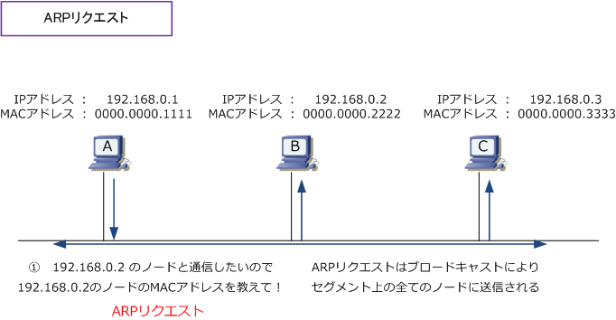
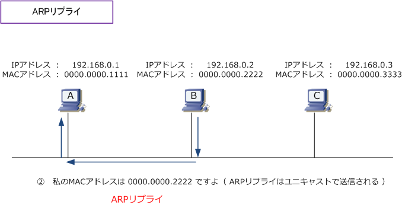
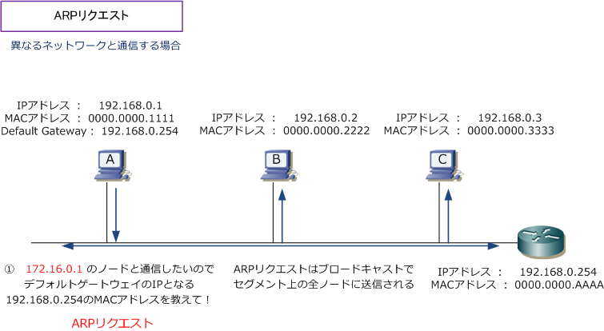
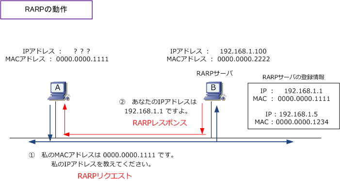

ARP
ARPとは
ARP（Address Resolution Protocol）は、IPアドレスからEthernetのMACアドレスの情報を得られる プロトコルです。LANに接続されたコンピュータ間で通信するためには、IPパケットは下位のレイヤで L2ヘッダが付加された上で伝送されることからMACアドレスの情報が必要となります。しかしこれらの IPアドレスとMACアドレスは自動的な関連づけがないので、ARPでMACアドレスを得る必要があります。 ※ TCP/IPを利用したコンピュータのLAN通信では、IPアドレスとMACアドレスの2つのアドレスが分かることで通信できます。
ARPの仕組み
ARPには「ARPリクエストとARPリプライ」という2種類のパケットがあります。ARPは、これら2種類の パケットを利用し、宛先となるIPアドレスを持つノードのMACアドレスの情報を得ます。例を見てみます。 下図において、コンピュータAがコンピュータBと通信したいとします。その場合は先ずコンピュータAから ARPリクエストを同じセグメントの全ての端末に送信するためにARPリクエストをブロードキャストします。

このARPリクエストのパケットの中には、MACアドレスを知りたいノードのIPアドレス情報が入っています。 ARPリクエストはブロードキャストされるので、全ノードがこのパケットを受信しますが、ARPパケットの 中身を見て探索しているIPアドレスが自分（192.168.0.2）と分かったコンピュータBは、コンピュータBの MACアドレス情報をコンピュータAに伝えるためにARPリプライのパケットをコンピュータAだけに送ります。 これでコンピュータAはBのMACアドレスを知ることができるので、LAN上での通信ができるようになります。

※ 当然ながら、ARP Replyを返答する際にL2スイッチを経由しても、送信元MACアドレスが変更されるような事はありません。
これらがARPの基本的な動きとなりますが、たとえば、コンピュータAが通信したい相手のコンピュータの IPアドレスが172.16.0.1だとします。その場合、172.16.0.1と通信したいので172.16.0.1のMACアドレス を得るためのARPリクエストではなく、デフォルトゲートウェイのIPである192.168.0.254のMACアドレス を得るためのARPリクエストを送信します。一般的に「デフォルトゲートウェイのIP ＝ ルータのIP」です。

RARPとは
RARP (Reverse Address Resolution Protocol) とは、EthernetのMACアドレスからIPアドレスの情報を 得ることのできるプロトコルです。ARPとは逆の動きのこのプロトコルは、現在ほぼ使用されていません。 どのような場合に使用されるかというと、IPアドレスを持たないと通信できない機器であるにも関わらず IPアドレスの設定ができない（またはIPアドレスの設定が保存できない）機器がある場合に使用されます。

このような機器は起動時には自分のIPアドレスが分かりませんが、インターフェースのハードウェア部分に MACアドレス情報としては保持していることから、「自分のMACアドレスはこれですが、私のIPアドレスは 何でしょうか？」という要求（RARPリクエスト）をすることでRARPサーバからIPアドレスを取得できます。
← IPとは ARPテーブル、ARPキャッシュ →